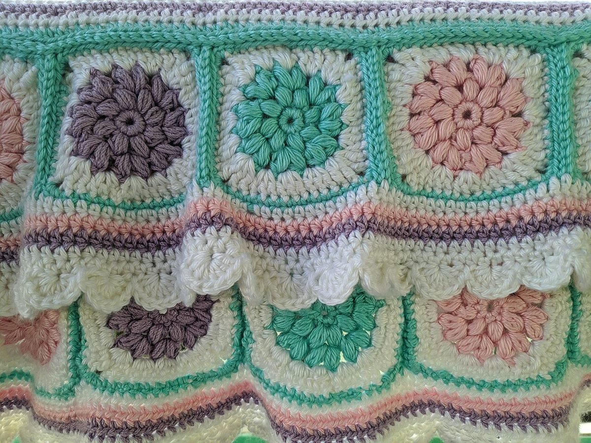

4段め
こんな声があるかもしれない
喫茶という業種から自然に想像できる声を、制作側が創作したものです。
以下は制作側の創作で、実在のお客様の投稿ではありません。実際の口コミ・評価とは関係ありません。
いつか、お店のInstagramをのぞいてみたいです。どんなお店なのか、投稿を見るのを楽しみにしています。
機会があれば、一度ゆっくり訪ねてみたいと思っています。その日を思い浮かべるだけで、少し楽しい気持ちになります。
投稿を見ながら、お店のことを少しずつ知っていけたらいいなと思います。いつか実際に足を運んでみたいです。
